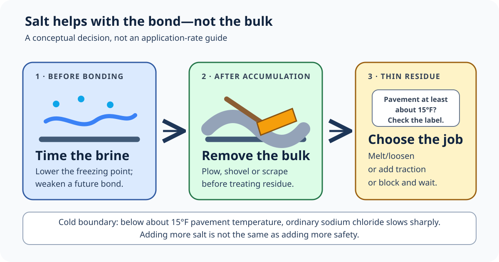

01 · Visual model
Timing changes what the chemical must do

Text equivalent: Before a bond forms, timed brine can lower the freezing point and keep frost or snow from adhering as strongly. After snow accumulates, mechanical removal handles the bulk. Only then is there a thin layer to loosen or melt. Below about 15°F pavement temperature, ordinary sodium chloride works too slowly for many practical uses; traction, another labeled method or waiting may fit better.
02 · Why it matters
“Salt melts ice” leaves out three decisions
Salt does not act as a dry magic powder. It must meet moisture and form a solution called brine. Brine has a lower freezing point than plain water. Before a storm, a timed anti-icing treatment can make it harder for frozen precipitation to establish a strong bond with pavement. After bonding, deicing must penetrate or loosen that layer.
That explains why road crews may spray a clear road ahead of a forecast: the goal is easier removal later, not a permanently bare road. It also explains why a pile of dry salt on deep snow wastes the tool. The snow still needs to be plowed, shoveled or scraped, and very cold pavement gives the salt less useful melting speed.
03 · Three different jobs
Do not ask one material to do all of them
Prevent a strong bond
Anti-icing is a timed treatment before bonding. Transportation agencies use forecasts, pavement sensors and calibrated equipment. This is not a household application-rate recipe.
Remove the bulk
Plowing, shoveling and scraping move accumulated snow, slush and loosened ice. Removing the mass first lets any later treatment reach the surface that matters.
Melt or add grip
A deicer can loosen a thin bonded layer when conditions fit its label. Sand or another abrasive can add temporary traction, but it does not melt ice and can be displaced.
04 · Worked example
Compare two invented winter decisions
A road before light snow
A trained crew's pavement sensor reads 28°F. The forecast supports light snow, so the crew applies a calibrated brine treatment before precipitation. When snow arrives, the brine helps prevent a strong pavement bond. A plow still removes the accumulation. The treatment changes the removal problem; it does not eliminate it.
A shaded walkway after snow
The air reads 20°F, but the shaded pavement reads 12°F. Loose snow is cleared safely, leaving a thin slick patch. Ordinary sodium chloride is a poor default because its practical performance drops sharply below about 15°F pavement temperature. The household decision becomes: follow a different product's label, add appropriate temporary traction, block access and wait, or ask for help. “Add more salt” is not its own success criterion.
05 · Reality check
Four reasons the same treatment can behave differently
- Pavement is not air: sun, shade, stored ground heat and season can make the surface warmer or colder than the reported air temperature.
- Dilution changes brine: more precipitation can dilute a useful concentration until refreezing becomes possible.
- Wind and traffic move material: dry grains can scatter, and abrasives can be displaced.
- Every extra chloride goes somewhere: excess salt can reach freshwater, drinking-water sources and infrastructure without improving the surface.
06 · Practice
Make one 15-minute surface plan
- Open the winter-surface decision card and choose one private walkway, step or driveway.
- Name the hazard: loose snow, slush, thin bonded ice, refreeze or unknown.
- Record pavement temperature if available; otherwise record that it is unknown.
- Remove loose material if it is safe, then choose one remaining job: melt/loosen, add traction, or block and wait.
- Follow the chosen product label, schedule a recheck and plan to sweep up residue when practical.
Knowledge check
- Why can anti-icing make later plowing easier?
- Why should loose snow be removed before deicing?
- What changes when pavement is below about 15°F?
Reveal answer guidance
- Properly timed brine can lower the freezing point and prevent a strong frozen bond with pavement.
- Mechanical removal handles the bulk and lets a later treatment reach the thin layer or surface where it can act.
- Ordinary sodium chloride becomes much slower and often impractical. Follow labels and local guidance; choose a fitting alternative, temporary traction, or waiting rather than simply adding more salt.
07 · Next steps
Use public guidance as a decision aid
Read the Minnesota Stormwater Manual factsheet to compare practical temperature ranges, melting and traction. The FHWA anti-icing explainer shows why timing changes the pavement bond. The EPA salt overview explains why using only what helps matters beyond the walkway. The source and limitation ledger maps each claim.